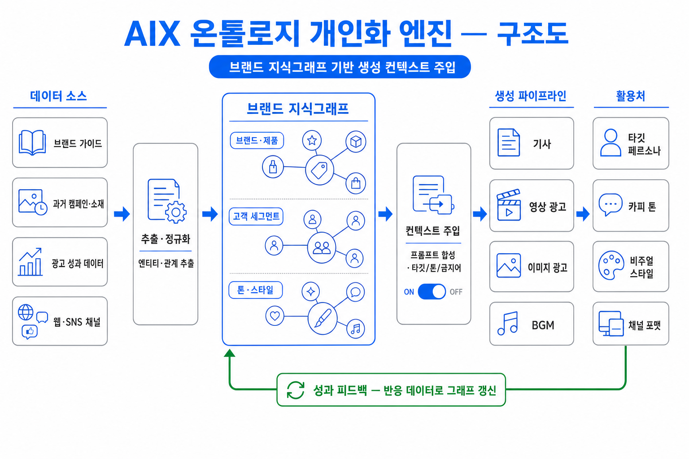

광고주가 직접 만들어도 “우리 브랜드답게” — 브랜드 지식그래프 기반 생성 컨텍스트 주입 구조와 저작 도구 전반의 시너지, 도입 단계를 제안합니다.
AIX의 주 사용자는 제작 대행사가 아니라 광고주(클라이언트) 본인입니다. 광고주가 직접 기사와 광고를 만들 때 가장 큰 장벽은 도구 사용법이 아니라, “만들어진 결과물이 우리 브랜드답지 않다”는 것입니다. 온톨로지 개인화 엔진은 광고주의 브랜드 자산·고객 데이터·집행 성과를 지식그래프로 축적하고, 모든 생성 요청에 이 컨텍스트를 자동 주입해 이 장벽을 제거합니다.
| 광고주 셀프 제작 시 문제 | 원인 | 온톨로지 엔진의 해법 |
|---|---|---|
| 브랜드 톤 불일치 — 결과물이 매번 다른 회사 같음 | 모델이 브랜드 가이드·과거 소재를 모름 | 톤·스타일 노드를 프롬프트에 상시 주입 |
| 타깃 부정합 — 2030 말투로 4060 고객에게 광고 | 고객 세그먼트 정보 부재 | 주 타깃 세그먼트·반응 키워드 자동 반영 |
| 반복 입력 피로 — 매번 같은 설명을 프롬프트에 작성 | 컨텍스트가 세션마다 휘발 | 그래프가 영구 축적 — 프롬프트 한 줄로 충분 |
| 성과 미반영 — 잘 된 광고의 교훈이 다음 제작에 없음 | 집행 데이터와 제작 도구의 단절 | 성과 피드백 루프가 그래프를 자동 갱신 |
엔진은 5단계 파이프라인과 성과 피드백 루프로 구성됩니다. 광고주 데이터로만 구축되며 워크스페이스 외부로 공유되지 않습니다. 사용자는 생성 화면에서 ON/OFF 스위치 하나로 개인화 적용 여부를 제어합니다.

제품명 한 줄만 입력해도 기존 브랜드 톤·주 타깃·금지 표현이 적용된 15초 영상과 SNS 이미지 세트가 일관된 캠페인으로 생성됩니다.
지난 시즌 성과가 좋았던 카피 구조·비주얼 패턴이 그래프에 남아, 다음 시즌 제작 시 “잘 됐던 방식”이 기본값이 됩니다.
유튜브·카카오 등 채널 노드별 포맷/톤 차이를 반영해 같은 소재를 채널 맞춤으로 자동 변형합니다.
회사 연혁·제품 사실관계가 그래프에 축적되어 있어, 기사 초안에서 사실 오류와 표기 흔들림(제품명·단위)이 줄어듭니다.
| 저작 화면 | 주입되는 컨텍스트 | 사용자 체감 |
|---|---|---|
| 기사 생성·편집 | 용어집·존칭 규칙 · 카테고리 톤 · 사실관계(제품·연혁) | 교정 없이 쓸 수 있는 초안 |
| 영상 클립 생성 | 타깃 세그먼트 · 선호 톤 · 스토리보드 패턴 · 금지 요소 | 프롬프트 한 줄 → 브랜드다운 컷 구성 |
| 영상 편집 · BGM | 자막 서체·크기 규칙 · BGM 무드 프리셋 · 더킹 관행 | 편집 명령이 브랜드 규칙 안에서 동작 |
| 이미지 광고 생성·편집 | 브랜드 컬러 · 비주얼 스타일 · 레이아웃 선호 · CTA 어휘 | 시안 4종이 모두 “우리 것” 같음 |
| 자산 라이브러리 | 자산-노드 연결 (제품 컷 ↔ 제품 노드) | 재사용 시 맥락 자동 연결 |
브랜드 가이드·과거 소재 업로드 → 자동 추출로 초기 그래프 생성, 광고주 검수 1회.
생성 전 화면에 ON/OFF 적용. 적용 전·후 비교 뷰로 효과를 광고주가 직접 확인.
집행 성과·채널 반응 데이터 자동 수집 → 반응 키워드/패턴이 그래프에 누적.
| 효과 | 측정 지표 (KPI 후보) |
|---|---|
| 첫 시안 채택률 상승 — 재생성 횟수 감소 | 시안 채택까지 생성 횟수 · 재작업률 |
| 제작 리드타임 단축 — 프롬프트·교정 시간 절감 | 캠페인 소재 1건당 제작 소요 시간 |
| 브랜드 일관성 — 채널·소재 간 톤 정합 | 브랜드 가이드 위반 검출 건수 |
| 학습 자산화 — 쓸수록 좋아지는 락인 구조 | 그래프 노드/관계 증가량 · 성과 반영 주기 |